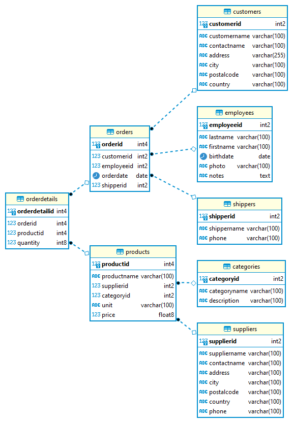

Relational Database Management System


The relational model (RM) for database management is an approach to managing data using a structure and language consistent with first-order predicate logic, first described in 1969 by English computer scientist Edgar F. Codd where all data is represented in terms of tuples, grouped into relations. A database organized in terms of the relational model is a relational database.
The purpose of the relational model is to provide a declarative method for specifying data and queries: users directly state what information the database contains and what information they want from it, and let the database management system software take care of describing data structures for storing the data and retrieval procedures for answering queries.
source: PrepInsta and Wikipedia